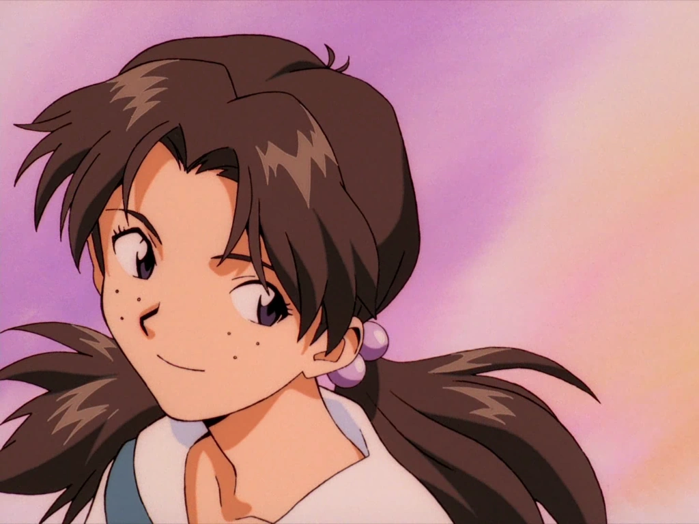

Horaki
Camarade de Shinji et déléguée de sa classe. Amie d'Asuka, elle entre souvent en conflit avec Toji et peine à exprimer ses sentiments réels envers lui.
Camarade de Shinji et déléguée de sa classe. Amie d'Asuka, elle entre souvent en conflit avec Toji et peine à exprimer ses sentiments réels envers lui.